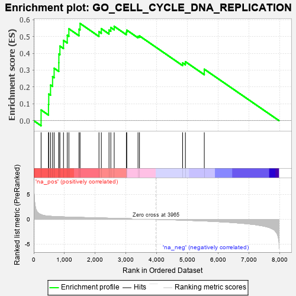

| | | Dataset | 7d |
| Phenotype | NoPhenotypeAvailable |
| Upregulated in class | na_pos |
| GeneSet | GO_CELL_CYCLE_DNA_REPLICATION |
| Enrichment Score (ES) | 0.577029 |
| Normalized Enrichment Score (NES) | 1.8085496 |
| Nominal p-value | 0.0 |
| FDR q-value | 0.116113484 |
| FWER p-Value | 0.863 |
Table: GSEA Results Summary

Fig 1: Enrichment plot: GO_CELL_CYCLE_DNA_REPLICATION
Profile of the Running ES Score & Positions of GeneSet Members on the Rank Ordered List
| PROBE | GENE SYMBOL | GENE_TITLE | RANK IN GENE LIST | RANK METRIC SCORE | RUNNING ES | CORE ENRICHMENT | | 1 | CDC45 | | | 239 | 0.950 | 0.0634 | Yes |
| 2 | ORC3 | | | 479 | 0.644 | 0.0967 | Yes |
| 3 | RFC2 | | | 488 | 0.635 | 0.1582 | Yes |
| 4 | MCM2 | | | 546 | 0.614 | 0.2114 | Yes |
| 5 | MCM7 | | | 612 | 0.591 | 0.2614 | Yes |
| 6 | RFC3 | | | 663 | 0.571 | 0.3112 | Yes |
| 7 | RFC4 | | | 815 | 0.528 | 0.3442 | Yes |
| 8 | RPA1 | | | 817 | 0.527 | 0.3959 | Yes |
| 9 | RPA2 | | | 851 | 0.519 | 0.4428 | Yes |
| 10 | ZPR1 | | | 967 | 0.491 | 0.4766 | Yes |
| 11 | RAD51 | | | 1090 | 0.466 | 0.5070 | Yes |
| 12 | MCM3 | | | 1142 | 0.456 | 0.5454 | Yes |
| 13 | DACH1 | | | 1471 | 0.395 | 0.5430 | Yes |
| 14 | MCM6 | | | 1506 | 0.389 | 0.5770 | Yes |
| 15 | INO80 | | | 2120 | 0.288 | 0.5282 | No |
| 16 | ATAD5 | | | 2197 | 0.277 | 0.5459 | No |
| 17 | FEN1 | | | 2446 | 0.237 | 0.5380 | No |
| 18 | CDT1 | | | 2505 | 0.226 | 0.5529 | No |
| 19 | RTF2 | | | 2615 | 0.210 | 0.5598 | No |
| 20 | RTEL1 | | | 3010 | 0.148 | 0.5248 | No |
| 21 | BRCA2 | | | 3024 | 0.146 | 0.5375 | No |
| 22 | RFC5 | | | 3389 | 0.091 | 0.5006 | No |
| 23 | RFC1 | | | 3437 | 0.085 | 0.5031 | No |
| 24 | TIPIN | | | 4839 | -0.166 | 0.3432 | No |
| 25 | ATRX | | | 4929 | -0.184 | 0.3501 | No |
| 26 | FGFR1 | | | 5543 | -0.332 | 0.3056 | No |
Table: GSEA details [plain text format]
 Fig 2: GO_CELL_CYCLE_DNA_REPLICATION: Random ES distribution
Fig 2: GO_CELL_CYCLE_DNA_REPLICATION: Random ES distribution
Gene set null distribution of ES for GO_CELL_CYCLE_DNA_REPLICATION